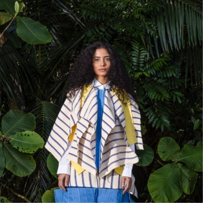
Foto: Chris Maldonado · Roupa: Lorena HaguiaraPsicologia · Gestão · Impacto
Sou psicóloga de formação pelo Mackenzie, com pós-graduação em Psicologia Jurídica pela PUC-RJ, e atuo há anos na interseção entre comportamento humano, gestão de projetos e produção executiva.
Minha trajetória passou pelo terceiro setor, onde trabalhei com alfabetização e vulnerabilidade social no Cenpec e na Fábrica de Cultura Jaçanã. Passou pela Piet e P_Andrade, onde mergulhei no mundo da moda como assistente de CEO e produtora executiva, com responsabilidades que iam da gestão administrativa e contratos com fornecedores à produção do desfile da marca no São Paulo Fashion Week, no Estádio do Pacaembu. Passou pelo y-Human, onde a moda se somou à sustentabilidade — gerenciando projetos, palestrei em universidades de moda de São Paulo e organizei eventos em Patrimônio Histórico. E chegou à publicidade, onde hoje sou Gerente de Projetos e Operações na Nation.
Em paralelo, facilito turmas do programa Mulheres em Foco, do Sebrae, trabalhando temas como comunicação assertiva, negociação, autoconfiança e tomada de decisão com empreendedoras de todo o Brasil. É um trabalho ancorado em Psicologia Grupal, e é onde mais claramente vejo o que a formação em Psicologia entrega na prática: a capacidade de criar espaço para que pessoas se reconheçam, se posicionem e avancem.
Escrevo com frequência sobre as conexões que encontro entre psicologia, gestão, produção e mercado de trabalho. Sobre o que move grupos. Sobre o que paralisa pessoas. Sobre mulheres e trabalho. Sobre o que acontece nos bastidores de um projeto bem executado.
O fio condutor de tudo isso é o mesmo desde o início: entender o que está acontecendo com as pessoas em determinado contexto e criar condições para que o trabalho flua com qualidade, cuidado e resultado.
trajetória
Nation
Atuo como ponte entre planejamento e criação, agência e cliente. Acompanho todas as etapas de projetos, conecto equipes e informações, gerencio prazos e impactos — garantindo entregas que equilibram excelência criativa e eficiência operacional.
Sebrae
Facilitação de turmas intensivas semanais do programa Mulheres em Foco, conduzindo temas como comunicação assertiva, negociação, autoconfiança e tomada de decisão. Atuação ancorada em Psicologia Grupal, criando espaços onde cada empreendedora reflete sobre sua trajetória e desenvolve ferramentas práticas para crescimento pessoal e profissional.
PIET · P_Andrade · Mil Workshops
Produção executiva do desfile da Piet no SPFW em 2025, no Estádio do Pacaembu. Gestão de eventos do início ao fim: materiais, cronogramas, contratações, ingressos, negociações e contratos com fornecedores. Apoio administrativo estratégico: documentos, agendas executivas, viagens corporativas, intermédio com jurídico e áreas financeiras. Organização e análise de candidaturas para diversas áreas, condução de entrevistas e feedbacks. Manutenção de workshops presenciais: inscrições, pagamentos, materiais e comunicação com alunos.
y-Human
Palestras em universidades de moda de São Paulo, liderança das equipes do concurso, atuação como Mestre de Cerimônia e organização de eventos presenciais em Patrimônio Histórico.
Universidade de São Paulo
Monitoramento e produção de conteúdo para a Biblioteca Cyro de Andrade e para a Revista Brasileira de Educação Física e Esporte. Revisão gramatical de artigos científicos.
Fábrica de Cultura Jaçanã
Atendimento psicológico gratuito; coordenação de atividades formativas remotas com educadores sobre vulnerabilidade social, preconceitos, violências e saúde mental; promoção de inclusão social.
CENPEC
Comunicação com secretários, coordenadores e professores municipais. Elaboração de conteúdos formativos, negociações de direitos autorais, homologação de cursos online e comunicação externa.
escrita
Reflexões publicadas no LinkedIn sobre psicologia, gestão, mulheres e mercado de trabalho.
Uma reflexão sobre Simone de Beauvoir, Nando Reis e o que conecta o condicionamento feminino à ideia de transformação.
Estava lendo um livro sobre economias femininas no Brasil, uma obra que traz contribuições para pensarmos uma nova sociedade, numa realidade ainda majoritariamente estruturada em benefício dos homens.
No livro, era citado O Segundo Sexo, de Simone de Beauvoir. Ao ler um trecho sobre o livro, que trata da relação entre o desenvolvimento psicológico das mulheres e os condicionamentos da socialização em que crescemos, e como isso faz com que a mulher se torne apenas um apêndice do sexo masculino, imediatamente me veio à cabeça a música O Segundo Sol, de Nando Reis. Na minha experiência de vida, essa música ficou marcada pela voz da Cássia Eller.
O Segundo Sexo foi um dos pontapés para o acendimento dos movimentos de mulheres no mundo, muito próximo à Conferência da ONU de 1975, ano declarado como o Ano Internacional da Mulher, quando muitas pautas vieram à tona. O Segundo Sol, por sua vez, nem havia sido escrito ainda naquela época.
Fui cantando a letra mentalmente, com a página do livro ainda aberta, e fui vendo que relação havia entre o segundo sol e o segundo sexo. A música nasceu porque Nando Reis tinha uma amiga mística, esotérica, que lhe falou sobre a vinda de um segundo sol, uma teoria, uma profecia. Ele desacreditou completamente. Depois de um tempo, escreveu a música como uma reflexão, quase um pedido de desculpas pela postura de ter descartado aquela ideia.
Comecei a fazer uma relação: os astrônomos, trazendo para o mercado de trabalho, seriam aqueles que historicamente ocuparam o centro do poder. Assim como os astrônomos definem o que é legítimo, o que é verdadeiro, o que tem poder dentro da astronomia, alguns dos homens, historicamente, definiram esses mesmos parâmetros no mercado de trabalho. E a mulher, nessa lógica, nunca foi algo que as estruturas vigentes definiram como merecedora de atenção, respeito ou igualdade no mercado.
A música fala dos astrônomos tratando aquilo como "apenas um cometa". Um cometa é algo passageiro, menor que um planeta, que foge do eixo principal. Fazendo o paralelo: as mulheres seriam os cometas. Os dominantes do mercado de trabalho as enxergam assim: passageiras, periféricas, citadas de vez em quando, mas nunca como centro.
Tanto é que, em diversas entrevistas, quando alguns homens são perguntados sobre mulheres que admiram em suas profissões, a dificuldade de citar nomes é enorme. As referências femininas simplesmente não foram construídas com o mesmo peso.
Entretanto, Beauvoir não estava dizendo que as mulheres são menos. Ela estava denunciando que a sociedade as construiu como menos, e que isso não era natureza, era condicionamento. Essa distinção muda tudo. A história provou que ela estava certa. Depois de O Segundo Sexo, o movimento de mulheres ganhou força no mundo inteiro. Vieram conquistas concretas: direito ao voto garantido em mais países, acesso à educação superior, leis contra violência doméstica, representação política, presença crescente em cargos de liderança. Não foi dado, foi conquistado com muita luta. O segundo sol chegou e foi realinhando as órbitas, uma conquista de cada vez.
O que Beauvoir fez com o livro foi exatamente o que a música descreve: anunciar algo que os "astrônomos" não conseguiam ver. Desfazer a ideia de apêndice não acontece só nas leis ou nas estatísticas. Acontece por dentro. O que vejo nas mulheres do curso que facilito é que um grande obstáculo é a voz interna que diz que não é boa o suficiente, que está ocupando um espaço que não é seu, que vai ser descoberta como uma fraude a qualquer momento. Isso tem nome: síndrome da impostora. E ela não nasceu do nada, ela é o condicionamento que Beauvoir descreveu.
O trabalho, então, é construir um ponto de apoio interno. Uma legitimidade que não depende da validação dos outros. E aí Beauvoir e Nando Reis se encontram em algo. Não disseram a mesma coisa, ela escreveu um ensaio filosófico de denúncia, ele escreveu uma canção a partir de uma experiência pessoal. Mas as duas obras se conversam: onde ela nomeou o condicionamento, ele intuiu a transformação. O Segundo Sexo e O Segundo Sol, produzidos em tempos e contextos completamente diferentes, mas apontando para a mesma direção: o que foi colocado em segundo lugar não é menor. Quando uma mulher encontra esse ponto, algo muda.
Sobre a fase de concepção de projetos, o valor do tempo e as regras de condução que aprendi nas primeiras conversas.
Tenho tido conversas nas últimas semanas sobre algumas iniciativas, e uma coisa que sempre fica muito clara pra mim nessa fase de concepção é o quanto uma ideia leva tempo pra existir de verdade. Não no sentido de executar, mas de entender o que ela é. São conversas que vão se desdobrando, começam de um jeito, mudam no meio, às vezes continuam dias depois; alguém traz uma referência, aparece um ponto novo, alguma coisa desloca o caminho e você precisa voltar, repensar, testar de novo.
Na minha visão, esse processo sempre deixa evidente que a fase inicial pede tempo e atenção. Mais do que abrir possibilidades, é começar a entender o que faz sentido sustentar, o que ganha força a cada novo papo e o que não precisa avançar. E é justamente aí que eu me divirto mais: organizando o que ainda está solto, conectando pontos, ajudando a dar direção sem forçar uma definição antes da hora.
O tempo é importante! Não dá pra passar o carro na frente dos bois, mas, por outro lado, as coisas não podem ficar sem algum nível de amarração, porque essas conversas precisam andar. Eu dificilmente saio de um encontro sem algum tipo de encaminhamento, mesmo que provisório, mesmo que mude depois. Então, no meio disso, tem algumas coisas que eu passei a tratar como regras de condução: sair com um próximo passo com prazo definido para realização; não tentar resolver tudo em algumas horas, mas também não finalizar uma conversa da mesma forma que ela se iniciou; refinar o caminho, sem reiniciar a cada nova conversa.
No fim, é assim que eu gosto de colaborar em iniciativas que estão sendo construídas do zero.
As mulheres não estão sobrecarregadas apenas pelo trabalho remunerado somado ao doméstico — elas sustentam a roda inteira do mercado.
Existe algo que a gente quase nunca fala quando discute trabalho invisível das mulheres: as mulheres não estão sobrecarregadas apenas pelo trabalho remunerado somado ao trabalho doméstico, elas estão o tempo todo trabalhando para que a roda do mercado continue girando.
Elas cuidam de quem ainda vai trabalhar e integrar o mercado de trabalho: crianças, jovens, futuros trabalhadores. Elas cuidam de quem já não trabalha mais: idosos, aposentados, pessoas adoecidas. Elas cuidam de quem trabalha hoje. Elas visitam familiares encarcerados, com a esperança de que serão ressocializados e reinseridos no mercado de trabalho. E, ao mesmo tempo, trabalham fora de casa. E, quando voltam, trabalham dentro de casa.
A perspectiva da reprodução social ajuda a enxergar isso com mais clareza: o mercado de trabalho só funciona porque alguém garante que as pessoas existam, cresçam, se mantenham vivas e minimamente cuidadas. E esse trabalho segue sendo feito majoritariamente por mulheres. O resultado é uma sobreposição constante: mulheres seguem sendo maioria no trabalho de cuidado, dentro e fora de casa, ao mesmo tempo em que enfrentam desigualdades salariais e barreiras de acesso a posições de poder no mercado de trabalho.
Esse apagamento não aconteceu por acaso. Ele tem origem em escolhas feitas dentro da própria teoria econômica. Autores centrais da economia clássica, como Alfred Marshall, ajudaram a consolidar a ideia de que só é considerado econômico aquilo que pode ser mensurado em termos monetários ou trocado no mercado. Tudo o que acontece fora dessa lógica, como o trabalho doméstico e de cuidado, passa a existir como se não tivesse valor econômico.
Pouco podemos fazer no curto prazo, porque as mudanças são lentas e esse debate é antigo. Mas é importante, ao menos, reconhecer essa lógica e continuar relembrando que ela existe. Por último: afaste-se dos Alfreds. Tem muitos por aí!
Os pensamentos desenvolvidos aqui partem de leituras e reflexões dos autores Vogel, Picchio, Jefferson e King, apresentadas no livro Economia Feminista no Brasil. Trago com frequência tópicos sobre mulheres e mercado de trabalho porque sou facilitadora do programa Mulheres em Foco, do Sebrae, onde essas discussões surgem o tempo todo a partir das experiências reais de mulheres no mercado de trabalho.
Como conduzo turmas a partir da Psicologia Grupal — e os feedbacks de mulheres que passaram pelo programa.
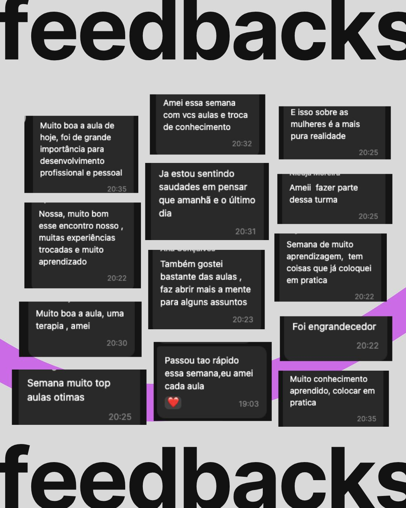
"O ser humano é simultaneamente um ser sociável e um ser socializado, que aspira comunicar com os membros de uma sociedade que o forma." (Marcos Alexandre, 2002). Essa frase sempre me lembra o quanto nenhum processo de desenvolvimento acontece sozinho. Estamos sempre inseridos em grupos.
É a partir da Psicologia Grupal que conduzo minhas turmas no Mulheres em Foco (Sebrae Nacional + DOT Digital Group), entendendo cada conjunto de alunas como um microgrupo humano, e criando um espaço onde cada uma se reconhece em sua singularidade e, ao mesmo tempo, se conecta na busca de objetivos compartilhados dentro de processos de desenvolvimento pessoal e também profissional.
Cada turma é um espaço pra aprender a teoria e, em seguida, testar isso na prática, com exercícios, simulações, e análises de situações reais. Os feedbacks que reuni aqui são de algumas das mulheres que passaram por temas como comunicação assertiva, formas de dar feedback, negociação, autoconfiança, tomada de decisão consciente, e muito mais.
A minha ideia, como uma das muitas facilitadoras incríveis que compõem esse projeto, é que cada mulher saia entendendo como se posicionar, sustentar uma conversa difícil, definir seus objetivos e próximos passos com clareza e comunicar o que quer sem abrir mão de quem se é. Porque não é nisso que eu acredito — acredito em autenticidade, trajetórias únicas e espaços de troca, que fortalecem os indivíduos, e então, consequentemente, fortalecem também toda uma comunidade de mulheres que buscam mais espaço no mercado de trabalho.
Minha primeira vez no Clube de Criação — o painel sobre COP30 e como os pontos foram se conectando.
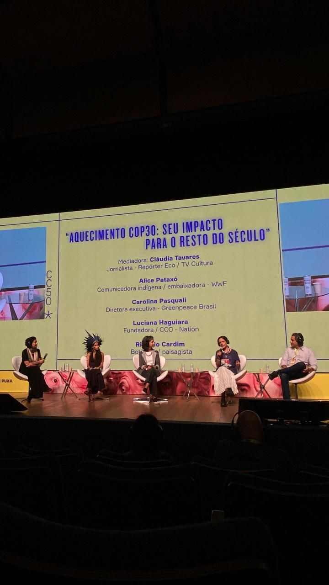
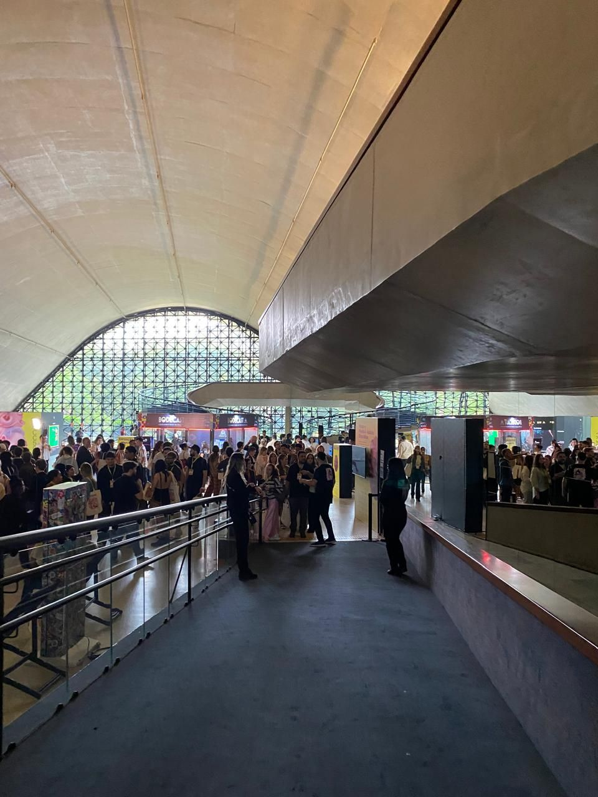
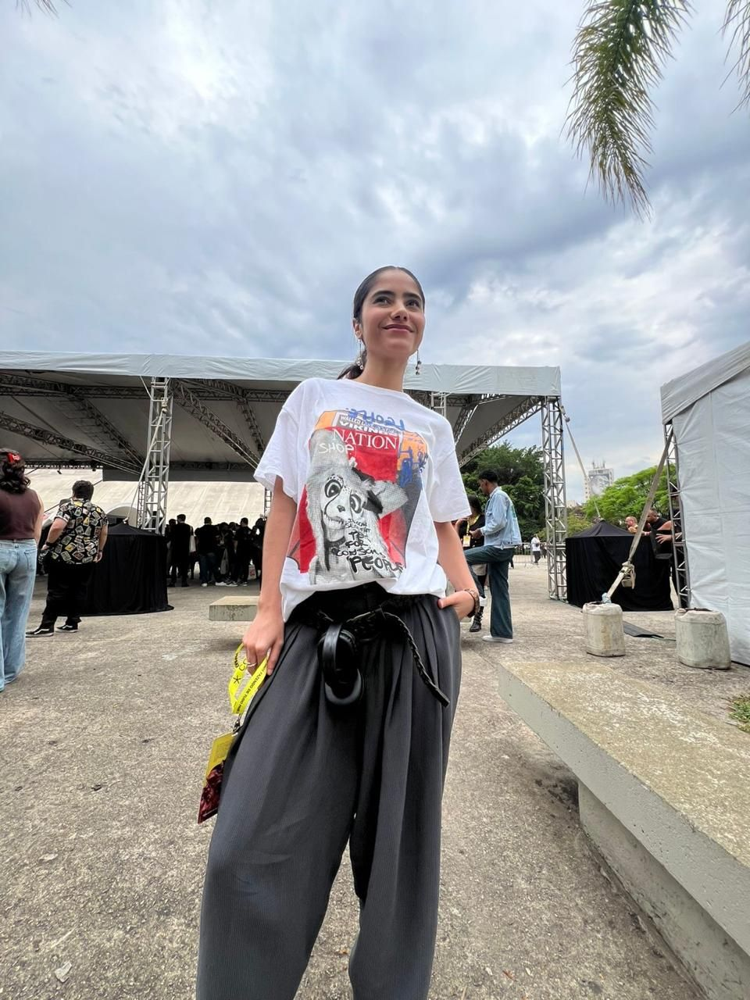
Foi curioso entrar num espaço que, até pouco tempo atrás, nem fazia parte do meu radar. Agora que comecei a viver a publicidade de dentro, tudo parece ter um outro sentido: as conversas, os bastidores, o jeito como as ideias ganham corpo. Fui principalmente pra assistir o painel "Aquecimento COP30: seu impacto para o resto do século", que aconteceu logo pela manhã, com Luciana Haguiara (fundadora e CCO da NATION), Alice Pataxó (comunicadora indígena, embaixadora da WWF), Carolina Pasquali (diretora executiva do Greenpeace Brasil) e Ricardo Cardim (botânico e paisagista), mediados pela jornalista Claudia Tavares. Não há palavras que descrevam os aprendizados que tive com esse time tão plural, assim como os debates levantados por eles, que estão ecoando até agora na minha cabeça.
Seguindo o dia, dentre inúmeras outras possibilidades de painéis, todos muito interessantes e ricos, uma das outras mesas que acompanhei foi voltada também para sustentabilidade. Pois, ESG é um tema que já me acompanha há algum tempo: participei de projetos guiados por essa agenda e, agora, na Nation, seguimos o mesmo propósito.
E bom, tudo isso me fez recordar do primeiro curso que eu fiz voltado pra esse debate importantíssimo, o curso de Gestão e Criação de Impacto Social na USP, que, inclusive, anos atrás, foi meu primeiro contato direto com os Objetivos de Desenvolvimento Sustentável da ONU. Então, ver essa pauta sendo trazida pro centro da comunicação e publicidade me fez conectar pontos e perceber como o que aprendi antes pode agora encontrar novos formatos, novas linguagens. Um dia pra lembrar! Sobre território, pertencimento e sobre como as coisas vão se conectando no caminho.
De adolescente fascinada por comportamento humano à gestora de projetos — uma trajetória não linear, mas sempre coerente.
Por volta de 2009, ainda na adolescência, eu já era completamente envolvida por histórias que exigiam leitura de comportamento, controle emocional e enfrentamento psicológico. Lia livros, assistia documentários e filmes voltados para isso. O filme "O Silêncio dos Inocentes" marcou especialmente esse meu fascínio e contextualizou muita coisa para mim.
Esse tipo de complexidade humana me instigava e foi isso que me levou à Psicologia com um objetivo claro: me tornar psicóloga forense. Cumpri o percurso com disciplina, da graduação à pós em Psicologia Jurídica. Queria realmente compreender, com profundidade e técnica, aquilo que parecia indecifrável. O plano seguia firme. Mas, no meio do caminho, outras experiências foram surgindo, e fui me envolvendo com elas de forma tão natural quanto consciente.
A Psicologia Social sempre me chamou, e esse interesse se aprofundou com minha vivência em instituições voltadas para vulnerabilidades, além de uma OSC de cultura e educação. Já no LEVV, como monitora, fazia levantamentos de projetos de lei e ações ligadas a vulnerabilidades sociais e violências, ampliando minha compreensão dos mecanismos envolvidos. Essas experiências me ensinaram o valor da escuta sensível e do reconhecimento das múltiplas vozes.
Não foi uma ruptura brusca, nem uma desistência do sonho inicial, foi um processo orgânico de descoberta. Cada novo desafio me mostrou que a Psicologia não precisa estar explícita para estar presente. Na produção cultural, na gestão de projetos e na construção de estratégias, eu encontrava espaço para usá-la como uma lente, uma maneira de compreender pessoas, contextos e dinâmicas que fazem a diferença.
Olhar para trás me mostra que sonhos não precisam seguir trajetórias lineares, e o desejo intenso de atuar na área forense foi se transformando, abrindo espaço para outras paixões. O fascínio pela complexidade humana que citei no início do texto nunca se perdeu, apenas ganhou novas formas, acompanhando as diferentes histórias, desafios e contextos que encontrei pelo percurso. Hoje, percebo que mesmo com mudanças de planos, o que aprendi e vivi continua sendo a base das minhas atuações, pois sonhos amadurecem e se reinventam, e é nesse movimento que podemos encontrar novos sentidos.
Me formei em Psicologia achando que o próximo passo seria seguir a cartilha. A vida profissional nem sempre é linear — e tudo bem.
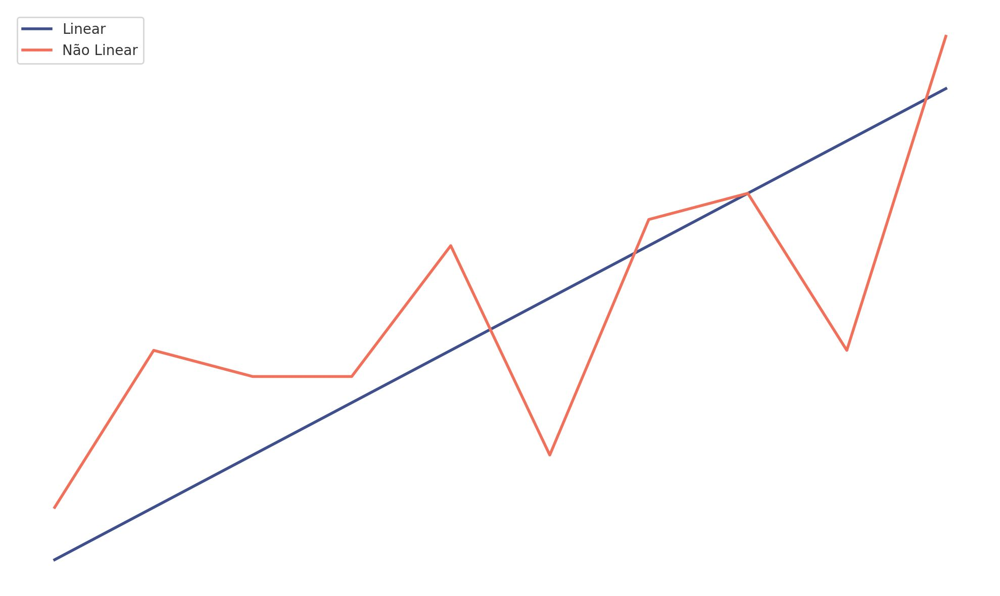
Fez uma faculdade e achou que estava fadado a seguir só aquele caminho? Eu também pensei assim, por um tempo. Me formei em Psicologia achando que o próximo passo seria seguir a cartilha, rolou até uma pós-graduação em Psicologia Jurídica. Mas a vida profissional, quando a gente escuta de verdade, nem sempre é linear.
Ao longo dos anos, percebi que o mais valioso não era o nome do cargo, nem a área onde eu atuava, mas as habilidades que fui desenvolvendo e conectando. Saber fazer as ligações certas entre experiências tão diferentes virou uma das minhas maiores forças. Aprendi a escutar de verdade (gente e projetos); aprendi a transformar ideias em operação, e sonhos em cronogramas reais; aprendi a manter o foco no detalhe sem perder de vista o todo, e vice-versa; aprendi que o que sustenta qualquer palco é o que está fora de vista, aprendi a cuidar dos bastidores com precisão e intenção.
Foi assim que fui navegando entre planejamento e execução de projetos, moda, produção executiva, tarefas administrativas, terceiro setor, assistência de diretoria… E tudo isso me levou a uma nova área, que eu nem imaginava ser possível dentro do modelo tradicional. Hoje, estou pela primeira vez no mercado publicitário — como Gerente de Projetos e Operações. Não, eu não venho da publicidade. Mas venho da prática de cuidar do invisível que faz os processos fluírem com escuta, estratégia, ética e coerência.
Demorei a perceber, mas foi quando abracei a não linearidade da minha trajetória que tudo passou a fazer mais sentido, e me permitiu crescer com profundidade e amplitude. Vamos conversar mais sobre isso? Gostaria de ouvir sobre caminhos, aqueles que desafiaram a ordem, que não se encaixam em roteiro algum, mas têm bagagem e repertório.
Como os Ritos de Passagem e a Teoria da Identidade Social transformam a experiência coletiva em eventos.
Nas últimas semanas, venho me desafiando a fazer o seguinte exercício: encontrar nas práticas da Produção Executiva nomes e conceitos que a Psicologia já estuda há décadas. Acredito que quando essas duas áreas se encontram, a experiência do público só tem a ganhar.
A Psicologia Social investiga como os indivíduos pensam, sentem e se comportam em contextos sociais, enfatizando o papel das interações e dos grupos na formação da identidade e do sentido de pertencimento. Segundo a Teoria da Identidade Social, nossa percepção de quem somos está ligada aos grupos aos quais pertencemos. Mas sentir-se parte de uma comunidade vai muito além da simples presença física, envolve o compartilhamento de valores, emoções e experiências que constroem um senso coletivo do "nós".
No contexto de eventos e projetos, esse entendimento é crucial. O produtor executivo cria não só uma organização eficiente, mas também espaços simbólicos onde as pessoas possam se reconhecer como parte de algo maior, gerando conexão real e duradoura. Esses símbolos se manifestam de forma sutil, e um ótimo exemplo é o que chamamos — na Psicologia — de Rito de Passagem: aquele momento em que, ao atravessar um portal, túnel ou entrada com som e luz diferentes, o corpo já entende que está entrando em outro universo. Esse tipo de transição marca o fim do cotidiano e o início de uma experiência coletiva. Mesmo sem palavras, ele comunica.
E aqui vai um ponto importante: pra esse gatilho ser ativado não precisa ser algo gigantesco. A psicologia está no simbólico, e o que ativa o impacto profundo não é necessariamente o tamanho ou a grandiosidade, mas a profundidade da experiência. Assim, cuidar dos aspectos simbólicos, dos rituais, do ambiente e das interações entre os participantes é o que transforma um evento em uma experiência comunitária genuína, com impacto emocional e social profundo.
Quando o produtor executivo entende e trabalha com essa dimensão simbólica, ele não está só organizando um evento. Está criando um espaço vivo, que fala diretamente ao corpo e à mente das pessoas, tornando a experiência mais rica, memorável e transformadora.
Mesmo sem seguir para a clínica, uso o que aprendi todos os dias — por que a Psicologia é uma forma poderosa de enxergar qualquer contexto.
Me formei em Psicologia. E talvez esse tenha sido o melhor ponto de partida que eu poderia ter escolhido. Mesmo sem seguir para a clínica, eu uso o que aprendi todos os dias, quando facilito grupos, quando lidero staffs, quando projeto experiências, quando penso comunicação, impacto social, cultura... A psicologia me treinou para a análise.
Durante um tempo, achei que minha trajetória fosse não linear. Hoje vejo que ela é coerente. Só não é óbvia. Um bom exemplo dessa não linearidade é Daniel Kahneman. Ele era psicólogo, mas ganhou o Prêmio Nobel de Economia justamente por aplicar a psicologia à tomada de decisões econômicas, um campo completamente diferente do que economistas estavam acostumados.
É essa abordagem que eu levo comigo em tudo o que faço. E é por isso que eu me movimento com tanta clareza, mesmo que, por fora, pareça múltiplo demais. Porque meu diferencial está em aplicar essas habilidades essenciais para gerar resultados reais, em qualquer contexto ou desafio.
Se você é psicólogo e atua fora do consultório, talvez ainda não tenha percebido o quanto seu background é um diferencial poderoso. Tudo o que você aprendeu pode — e deve — ser usado para abrir caminhos e gerar impacto, mesmo que seu trajeto não seja o mais esperado. O mercado precisa dessa visão ampla, analítica e profunda que só a Psicologia entrega.
O que realmente transforma grandes eventos é o esforço conjunto nos bastidores — e como a comunicação une tudo.
Quando pensamos em grandes eventos, muitas vezes o que brilha é o espetáculo final: o palco, a apresentação, a parte visível. Mas o que realmente transforma esses momentos incríveis é o trabalho de equipe, o esforço conjunto nos bastidores. Como produtora executiva, aprendi que as conexões estratégicas são o que fazem a diferença!
Em minha experiência, fui desafiada a trabalhar com equipes multidisciplinares em projetos que envolvem desde a educação até a moda, sempre com a missão de criar algo inovador e significativo. Os projetos em que estive presente me ensinaram que a magia não acontece sozinha. A construção de parcerias, a confiança nas pessoas certas, e a colaboração constante são o que transformam uma ideia em realidade.
Na produção executiva, não é apenas sobre pedir, é sobre como pedir. A forma como nos comunicamos é essencial para garantir que todos estejam alinhados com as expectativas do projeto. Não é apenas impor prazos, é acompanhar as parcerias, entender as necessidades e limitações de cada envolvido, e garantir que todos caminhem juntos em direção ao objetivo final. É ter respostas rápidas e certeiras, ou ao menos buscá-las com agilidade, sempre preparada para resolver imprevistos de forma rápida e eficaz.
Além disso, é ter interesse genuíno, conhecer cada detalhe do projeto e das parcerias, se antecipar aos problemas antes que eles aconteçam. Parte da nossa responsabilidade como produtores executivos é garantir que todos estejam satisfeitos, criando um ambiente de confiança e colaboração. No final das contas, a habilidade de comunicação é o que une todos esses elementos, tornando a execução impecável e o relacionamento duradouro.
Para além das habilidades técnicas, acredito que são esses os elementos que, no backstage, fazem a diferença entre um evento bem sucedido e um que deixa a desejar. A produção executiva é o ponto de equilíbrio entre caos e organização, e saber gerenciar essas questões é fundamental para garantir que cada detalhe seja cumprido de forma harmônica.
palestras & eventos
Brazil Immersive Fashion Week · Ago 2024
No dia 14 de agosto, estivemos no palco Led Stage do BR_IFW com o painel "Um Novo Mundo: y-Human e a Consciência Regenerativa no Caos", com Felipe Gusta, Joy Pires, Marcella Alves, Paula Kim e Pedro Andrade. Destacamos a jornada do y-Human, sobre como promovemos a transparência e inovação através da tecnologia blockchain, considerando os problemas da cadeia têxtil e impactos ambientais, sobre como nossas conferências destacaram inovações como a rastreabilidade binária e next gen materiais, e sobre as soluções open-source geradas pelo nosso hackathon.
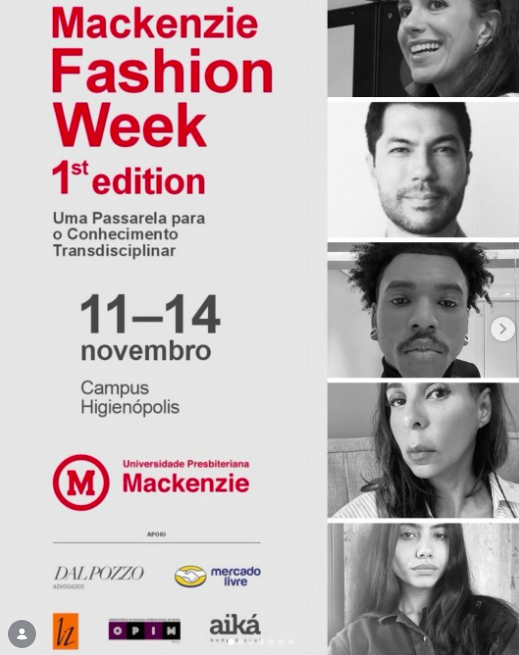
Mackenzie Fashion Week · Nov 2024
O Núcleo Fashion Law do Mackenzie realizou a 1ª edição do Mackenzie Fashion Week entre os dias 11 e 14 de novembro de 2024. Nosso painel "Fashion and Science On-Chain: Da Blockchain à Moda — Um Foco no Design Regenerativo" explorou como blockchain e IA podem transformar a indústria da moda, promovendo transparência e rastreabilidade. Discutimos o design regenerativo, o Digital Product Passport (DPP) europeu, e a jornada do y-Human como incubadora dedicada aos desafios do setor da moda brasileira. Com Catarina Papa (RITO e Layer Two), Fabrício Takahashi (FARFARM) e Gus Sant'ana (Oracle).
y-human — momentos
Produtora executiva do desfile da coleção Farmers League — encerramento do SPFW — e a ação de levar 400 estudantes gratuitamente.
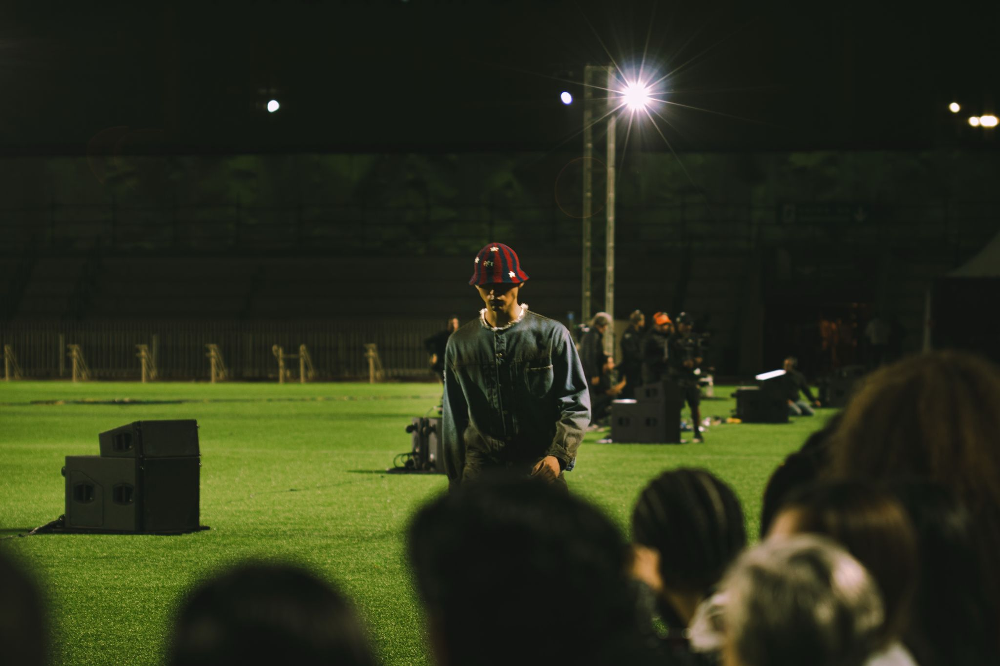
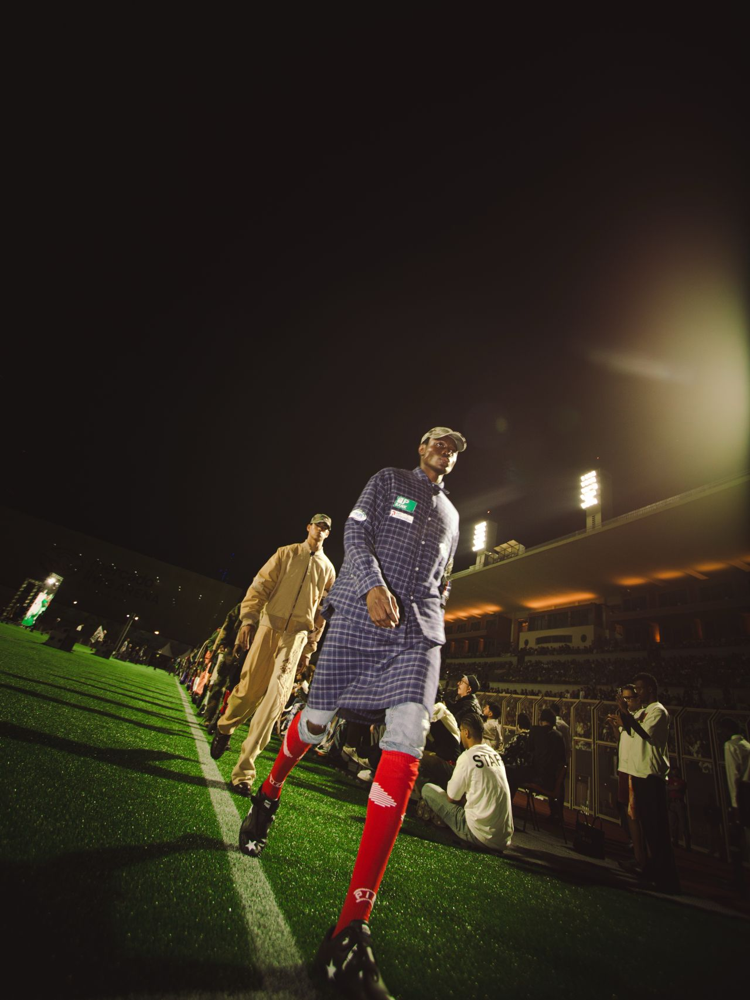
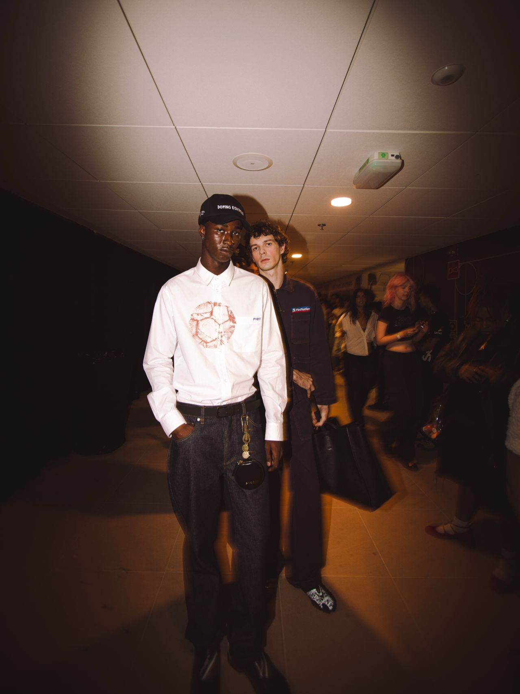
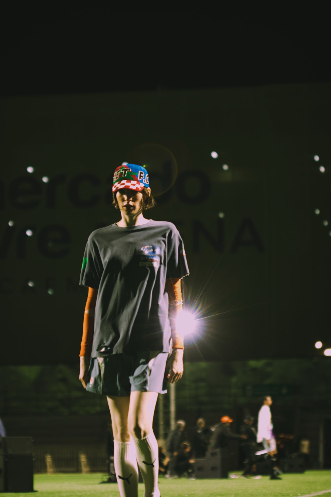
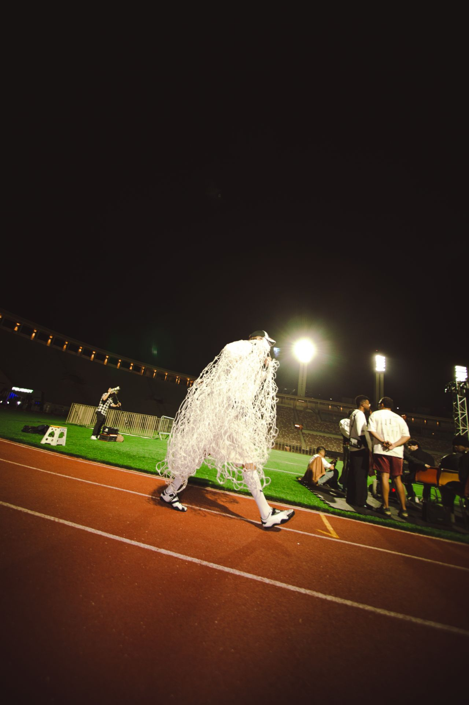
Na última semana, vivi um momento que representa muito do que acredito profissionalmente e pessoalmente! Como produtora executiva na PIET, participei de perto da construção do desfile da coleção Farmers League, apresentado no Estádio do Pacaembu e responsável pelo encerramento do São Paulo Fashion Week — uma conquista enorme para a marca e para nós, como equipe.
Paralelamente, como uma das integrantes do y-Human, pude colaborar com uma ação incrível: convidamos cerca de 400 alunos de universidades de moda de São Paulo para assistirem gratuitamente ao desfile. Acredito que transformar a indústria passa por proporcionar experiências reais para quem está se formando agora, acesso que muitas vezes ainda é negado para estudantes por barreiras financeiras ou estruturais.
E pra contextualizar: o y-Human é uma incubadora dedicada à regeneração do sistema da moda. Atuamos a partir dos pilares de educação, inclusão, transparência e tecnologia, promovendo encontros entre inovação e propósito. A ação com os estudantes faz parte do nosso movimento contínuo de unir teoria e prática.
Ver estudantes entrando em um espaço como um desfile da Piet, numa Semana de Moda, e receber os feedbacks super positivos sobre essa experiência reforçam nossos valores e o propósito do y-Human. Como sempre falamos: por aqui a gente une comunidades.
Fotos: @mjapaa_photo · Agradecimentos: Mackenzie · Senac SP · Anhembi Morumbi · IED Brasil · Faculdade Santa Marcelina · USP
Da USP ao y-Human — como experiências no terceiro setor, educação e moda sustentável se conectaram.
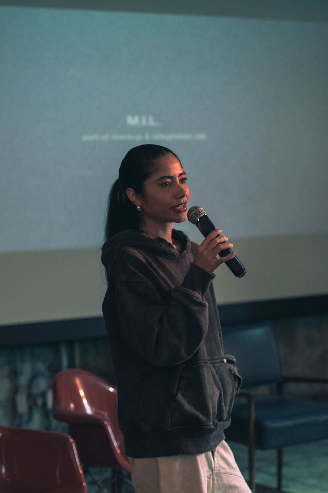
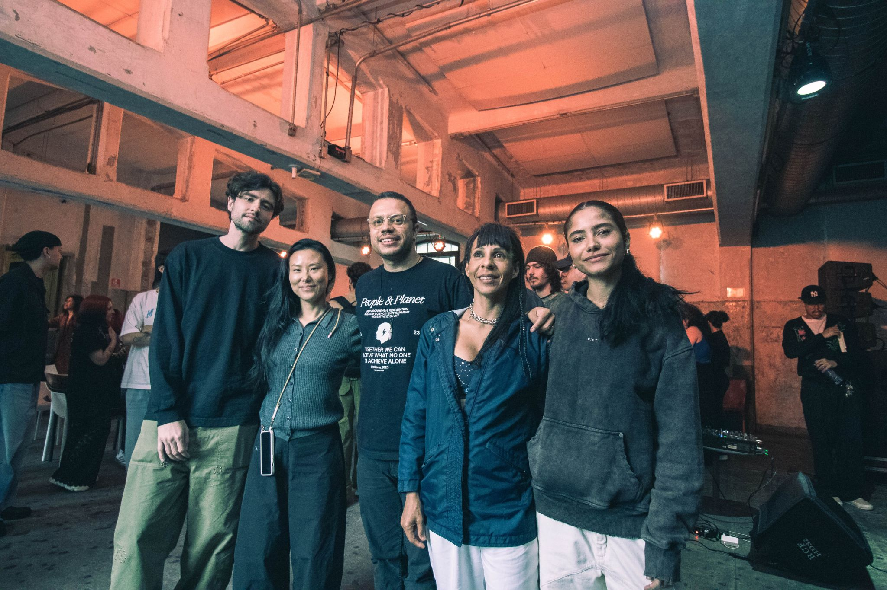
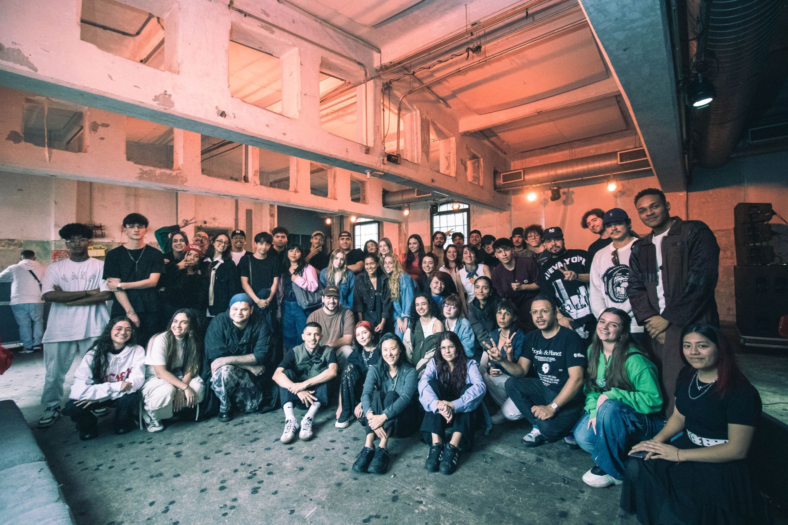
Tudo começou com meu primeiro curso na área: Gestão e Criação de Impacto Social, pela Universidade de São Paulo (USP), feito em 2019. Esse curso foi essencial para desenvolver competências fundamentais, como comunicação, trabalho em equipe e um olhar crítico sobre como gerar mudanças reais na sociedade. Foi nesse momento que percebi a importância de alinhar meu trabalho com a criação de impacto.
Durante a pandemia de Covid-19, tive a oportunidade de colaborar em um projeto de emergência com a Fundação Tide Setubal, para auxiliar crianças em fase de alfabetização no bairro Jardim Lapenna, em São Paulo. Além disso, em projetos como o Letra Viva, do Cenpec, tive a chance de trabalhar com a metodologia de formação de rede levando alfabetização e educação infantil a municípios brasileiros. Tive contato direto com secretários, coordenadores e professores, participei de reuniões de elaboração de conteúdos formativos e estive envolvida em negociações.
Foi com esse background que entrei para o y-Human. Como produtora executiva, participei de diversas etapas essenciais, como o planejamento de agendas e cronogramas, o gerenciamento da comunicação com parceiros e patrocinadores, além da organização dos eventos presenciais e de todas as minúcias que exigem fazer um evento em um Patrimônio Histórico de São Paulo. Cada detalhe foi pensado com carinho e foco, desde a criação de apresentações até a coordenação da equipe de staff. Além disso, tive a chance de atuar como Mestre de Cerimônias, o que foi uma experiência incrível e desafiadora!
Trabalhar com uma equipe talentosa foi um aprendizado constante, e as parcerias construídas ao longo do processo me deixam extremamente orgulhosa. Acredito que, com dedicação e colaboração, podemos impactar a indústria da moda de forma mais sustentável e regenerativa.
31 de maio de 2024 — inaugurei oficialmente o y-Hack: Fashion, People and Planet como MC.
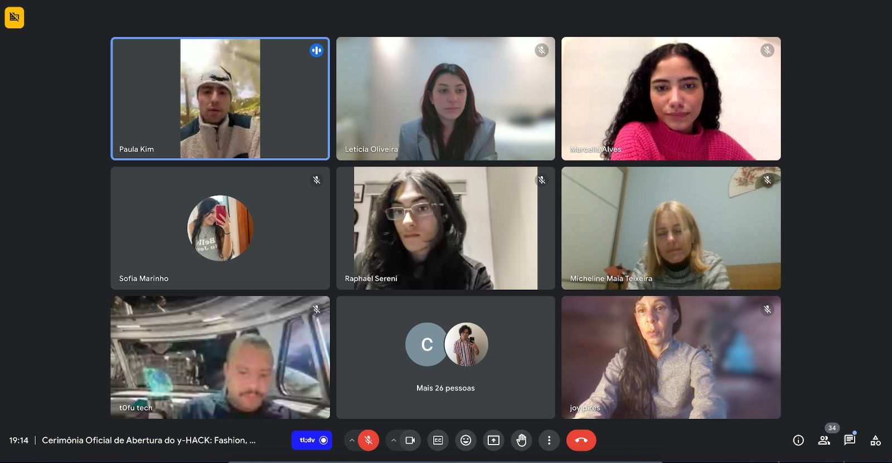
Estou há alguns meses em uma jornada intensa, maravilhosa, desafiadora e muito satisfatória com a equipe do y-Human. Muito feliz por fazer parte desse projeto e de estar ao lado dos melhores! O y-Human é uma incubadora de projetos voltados pra soluções regenerativas pro mundo da moda. Somos uma equipe multidisciplinar e estamos promovendo um evento também multidisciplinar, que está na sua primeira edição, o "y-Hack: Fashion, People and Planet".
Nele, estudantes e profissionais das áreas da moda, tecnologia blockchain e web 3, estão desenvolvendo coleções de roupas que trazem com elas soluções para a cadeia produtiva da moda e para o planeta. Tendo a regeneração como o nosso principal pilar, nosso intuito é continuar conectando comunidades e criando alternativas sustentáveis que sempre serão distribuídas em código aberto.
Nessa trajetória, pude aproveitar habilidades que eu já tinha desenvolvido em outros momentos da minha carreira, mas nesse post quero destacar algo novo, que só foi possível graças à confiança depositada em mim pela minha equipe: fui Mestre de Cerimônia pela primeira vez. Dia 31 de maio de 2024, tive a honra de iniciar oficialmente o nosso evento, de forma online, e não poderia estar mais feliz e satisfeita com todo o aprendizado e oportunidades que esse projeto tem me proporcionado!
Anhembi Morumbi, Belas Artes, Link School, USP e mais — divulgando o y-Hack nas faculdades.
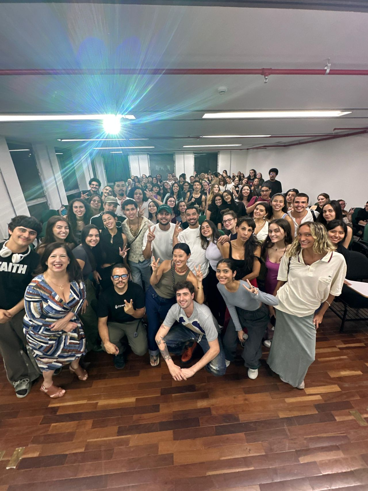
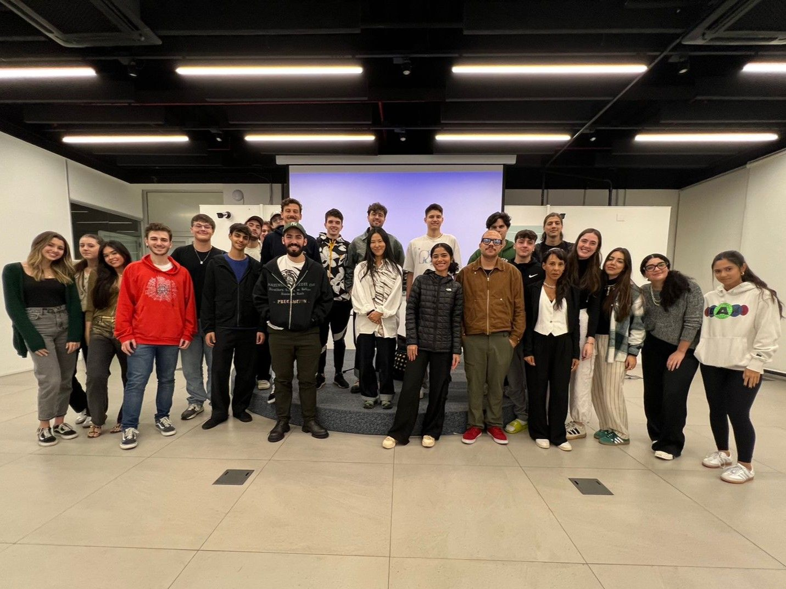
Na última semana, demos início à maratona de palestras para divulgação do primeiro evento da nossa incubadora: o y-Human, e a primeira parada foi a Universidade Anhembi Morumbi! Conheça o "y-Hack: Fashion, people and planet", uma competição, em forma de hackathon, que irá desafiar equipes multidisciplinares de Moda e Tecnologia (Web 3 e Blockchain) a criarem coleções de roupas que contenham soluções regenerativas para a cadeia produtiva têxtil e para o planeta.
Dando sequência à maratona, nos últimos dias estivemos presentes em mais algumas universidades de São Paulo: Centro Universitário Belas Artes de São Paulo, Link School e Universidade de São Paulo. Durante dois meses, os grupos que tiverem os seus pré-projetos selecionados, irão trabalhar de forma híbrida: online e em prol dessa solução; e presencial com dois encontros, na Central 1926, para palestras e mentorias com especialistas nos temas, e também para reuniões em grupo.
Ao final da competição, o projeto selecionado será incubado pela Mil workshops e pela PIET, com todo o lucro revertido para a equipe vencedora, que também irá receber bolsas de estudos! Esperamos vocês, alunos e profissionais da Moda e da Tecnologia!
formação
Ago 2022 — Dez 2023
PUC — Rio de Janeiro
Fev 2015 — Jun 2021
Universidade Presbiteriana Mackenzie — São Paulo
competências
contato
Estou aberta a novas oportunidades em gestão de projetos, operações, produção executiva e facilitação. Entre em contato pelo canal que preferir.